무선설비기사 (2006-03-05 기출문제)
1과목: 디지털 전자회로
1. 증폭기 입력 측에 구형파를 가하고 출력 측에서 측정된 상승시간(rise time)이 0.35[㎲]였다. 이 증폭기의 고역 3[㏈] 차단주파수는 몇 [㎒]인가?
- 0.5
- 1
- 2
- 10
(정답률: 알수없음)

2. 그림과 같은 발진회로의 출력파형은?
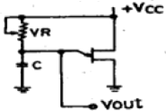
- 톱니파
- 정현파
- 구형파
- 펄스파
(정답률: 알수없음)
3. 다음과 같은 정논리회로의 게이트 기능은?
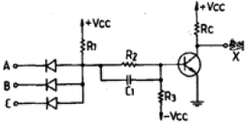
- NDR
- NOT
- NAND
- AND
(정답률: 알수없음)
4. One-Short 멀티바이브레이터로부터 49[㎲]의 펄스폭이 주어질 때 이를 만드는데 필요한 대략 시정수는?
- 65[㎲]
- 70[㎲]
- 75[㎲]
- 80[㎲]
(정답률: 알수없음)
5. 바이어스 전압에 따라 공간 전하용량이 달라지는 다이오드는?
- Zener Diode
- LCD
- Tunnel Diode
- Varactor Diode
(정답률: 알수없음)
6. 3개(A,B,C)의 입력 펄스에 대한 출력(X)동작은 어느 게이트에 해당하는가?
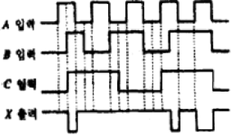
- AND
- NAND
- OR
- NOR
(정답률: 알수없음)
7. 플립-플롭 4개로 구성된 계수기가 가질 수 있는 최대의 2진 상태는 몇 가지인가?
- 8가지
- 12가지
- 16가지
- 20가지
(정답률: 알수없음)
8. 차동증폭기의 동상제거비(Common Mode Rejection Ratio)를 향상시키기 위한 방법으로 적합하지 않은 것은?
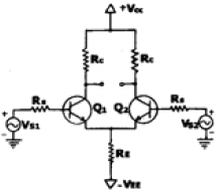
- hfe가 큰 트랜지스터를 선정한다.
- Emitter 저항 RE의 값을 높은 값으로 선정한다.
- 입력 임피던스를 높이기 위해 Rs를 크게 선정한다.
- Q1, Q2 는 전기적특성이 동일한 트랜지스터를 선정한다.
(정답률: 알수없음)
9. 다음 Karnaugh도를 간략화 한 결과는?
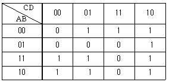
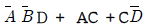
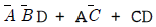
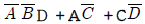
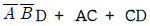
(정답률: 알수없음)
10. FM 변조에서 변조지수가 6 이고 신호주파수가 3[㎲]일 때 주파수편이는 얼마인가?
- 6[㎲]
- 9[㎲]
- 18[㎲]
- 36[㎲]
(정답률: 알수없음)
11. 그림과 같은 연산증폭기의 -3[dB] 저역 하한주파수는?
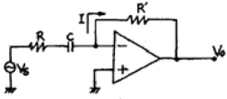
- 1/2πRC
- 1/2πR'C
- 1/2π(R+R')C
- 1/2πRR'C
(정답률: 알수없음)
12. 다음 로직회로(logic circuit)의 출력은?
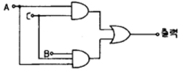
- AB
- AC
- ABC
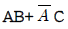
(정답률: 알수없음)
13. 다음 그림과 같은 비반전 연산 증폭기 회로에서 부하 RL에 흐르는 전류는? (단, R1=1㏀, R2=2㏀, R3=3㏀, Vi=2V )
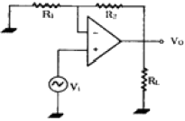
- 1mA
- 2mA
- 3mA
- 4mA
(정답률: 알수없음)
14. 증폭기 중에서 트랜지스터가 오직 반주기 동안만 홀성영역에 있고 나머지 반주기 동안은 차단영역에 있는 증폭기는?
- A급 증폭기
- B급 증폭기
- AB급 증폭기
- C급 증폭기
(정답률: 알수없음)
15. 진폭변조에서 반송파의 주파수를 fc 변조신호의 주파수를 fs 라고 할 때, AM파의 대역폭은 다음중 어떤 수식으로 표현되는가?
- fc + fs
- fc - fs
- fs
- 2fs
(정답률: 알수없음)
16. 그림과 같은 op증폭기의 출력전압 VO를 구하시오. (단,
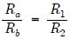
임)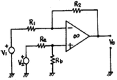
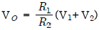
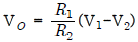
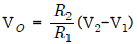
- R1R2(V2-V1)
(정답률: 알수없음)
17. 그림과 같은 증폭회로에서 캐패시터 C의 주된 역할은?
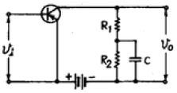
- 기생진동 방지용
- 발진방지용
- 정전용량 중화용
- 저주파 특성 개선용
(정답률: 20%)
18. 부울 방정식
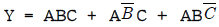
를 간단히 하면?- AB
- AC
- ABC
- A(B+C)
(정답률: 알수없음)
19. JK 플립플롭(Flip-Flop)을 다음 그림과 같이 연결했을 때 어떤 것과 같은가?
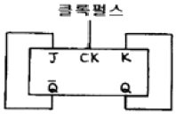
- D 플립플롭
- RS 플립플롭
- T 플립플롭
- 래치(latch)
(정답률: 알수없음)
20. Q가 10 이고, 공진주파수가 1[㎒]인 동조회로의 공진시 임피던스(lmpedance)는 약 얼마인가?(단, L = 1[mH]라 한다.)
- 15.7[㏀]
- 38.2[㏀]
- 51.4[㏀]
- 62.8[㏀]
(정답률: 알수없음)
2과목: 무선통신 기기
21. 위성통신에서 강우중인 공간을 전파하는 전파가 빗방울에 의한 영향으로 생기는 현상이 아닌 것은?
- 전파의 흡수
- 전파의 산란
- 교차편파 식별도의 열화
- 파라데이 회전
(정답률: 알수없음)
22. 단상 반파 정류기의 맥동주파수와 전원주파수의 관계로 맞는 것은?
- 1배
- 2배
- 3배
 배
배
(정답률: 알수없음)
23. 린콤팩스(LINCOMPEX: linked compr and expander) 통신방식은 특징이 아닌 것은?
- 음성신호가 주파수변화 정보만으로 변환되어 전송되기 때문에 페이딩 영향이 적다.
- 압축기와 신장기를 이용하기 때문에 S/N이 향상된다.
- 단파대에서 페이딩의 영향을 감소시키기 위하여 고안된 SSB통신방식이다.
- 진폭변화 성분과 주파수 성분은 페이딩 영향을 거의 받지 않기 때문에 다른 변환과정을 행할 필요가 없다.
(정답률: 알수없음)
24. 수신기의 종합 특성 측정에 속하지 않는 것은?
- 감도 측정
- 충실도 측정
- 선택도 측정
- 전력 측정
(정답률: 알수없음)
25. 자려발진기를 사용한 직접FM변조와 비교하여 수정발진기를 사용한 간접FM변조의 특징 중 틀린 것은?
- 자동주파수제어가 필요하다.
- 주파수안정도가 높다.
- 전치 보상기회로가 필요하다.
- 큰 주파수 편이를 요하는 송신기는 주파수 체배가 필요하다.
(정답률: 알수없음)
26. 위성의 자세를 제어하기 위해서는 3개의 기준축이 설정된다. 이에 속하지 않는 것은?
- 롤(roll)축
- 요(yaw)축
- 토크(torque)축
- 피치(pitch)
(정답률: 알수없음)
27. 100[㎒]의 반송파를 최대주파수 편이 50[㎒]로 하고 10[㎑]의 신호파로 주파수변조시 주파수대역은?
- 50[㎑]
- 100[㎑]
- 120[㎑]
- 140[㎑]
(정답률: 알수없음)
28. 다음 중 FM수신기에서 주로 사용되는 잡음억제회로가 아닌 것은?
- Limiter 회로
- Squelch 회로
- Muting 회로
- Eliminator 회로
(정답률: 알수없음)
29. DSB변조기에서 고효율 변조회로에 해당되지 않는 것은?
- 종단 B급 변조
- 시렉스(Chirex) 변조
- 도허티(Doherty) 증폭기
- 베이스 변조
(정답률: 알수없음)
30. FM수신기에서 2단 증폭기의 초단 증폭기의 이득이 15[㏈], 잡음지수가 1.2[㏈]이고, 후단 증폭기 이득이 10[㏈], 잡음지수 1.6[㏈]일 때 수신기의 종합 잡음지수는?
- 1.34[㏈]
- 1.24[㏈]
- 1.14[㏈]
- 1.04[㏈]
(정답률: 알수없음)
31. 희망신호에 근접한 주파수의 방해가 있으면 수신기의 감도가 저하한다. 이것을 무엇이라고 하는가?
- 혼변조
- 감도억압효과
- 스퓨리어스 응답
- 상호변조
(정답률: 알수없음)
32. 급전선 측정 항목으로 가장 타당한 것은?
- 주파수 안정도 측정
- 주파수 허용 편차 측정
- 실효 인덕턴스 측정
- 전압 정재파비 측정
(정답률: 알수없음)
33. FM 무선 통신에서는 송신 및 수신기에 각각 Pre-emphasis와 De-emphasis 회로를 사용하고 있다. 다음 중 이들 회로를 사용하는 이유로 가장 타당한 것은?
- 저주파 특성 개선
- 고주파 특성 개선
- 과변조방지
- 반송 주파수 안정
(정답률: 알수없음)
34. 위성 탑재용 중계기 (Transponder)의 구성 항목 중 거리가 먼 것은?
- TWTA
- 저 잡음 증폭기
- 주파수 변환장치
- 안테나
(정답률: 알수없음)
35. PCM에서 피크-피크 전압이 ±8[V]인 아날로그 신호를 일정한 간격으로 16개의 레벨로 나눈 경우 양자화 잡음에 대한 S/N[㏈]는 약 얼마인가?
- 19.8㏈
- 25.8㏈
- 31.8㏈
- 37.8㏈
(정답률: 알수없음)
36. 다음은 BPF 필터의 사용상 또는 설계상 주의할 점을 나타낸 것이다. 잘못 설명한 것은?
- 통과대역의 감쇠량이 매우커야 한다.
- 차단특성이 예리해야 한다.
- 저지대에서의 신호는 차단되어야 한다.
- 삽입손실이 적어야 한다.
(정답률: 알수없음)
37. 수신기의 입력회로의 역할이 아닌 것은?
- 임피던스 정합
- 희망 주파수의 선택
- 근접 주파수 입력이 제거
- 회부잡음의 감소
(정답률: 알수없음)
38. 다음 접지 안테나의 실효고 측정방법으로 적합하지 않은 것은?
- 전계강도 측정에 의한 방법
- 표준 안테나에 의한 방법
- 정재파비에 의한 방법
- 표준 안테나와 전계강도 측정기에 의한 방법
(정답률: 알수없음)
39. 단상 반파 정류회로에 사용한 다이오드의 순방향 저항이 10[Ω]이고 회로의 부하저항이 200[Ω]이라면 정류효율은?
- 약 32.7[%]
- 약38.7[%]
- 약 42.7[%]
- 약48.7[%]
(정답률: 알수없음)
40. 초고주파 송신기의 전력 측정 방식과 거리가 먼 것은?
- 열량계에 의한 전력 측정
- 방향성 결합기 사용
- 오실로스코프 사용
- 스펙트럼 분석기 사용
(정답률: 알수없음)
3과목: 안테나 공학
41. TE10모우드의 구형 도파관에서 장변을 a, 단변을 b라 할 때 a = 5[㎝]의 차단주파수(Cut off Frequency)는 얼마인가?(오류 신고가 접수된 문제입니다. 반드시 정답과 해설을 확인하시기 바랍니다.)
- 30[㎒]
- 300[㎒]
- 3,000[㎒]
- 30,000[㎒]
(정답률: 알수없음)
42. 다음 중 고조파 안테나에 대한 설명으로 옳은 것은?
- 고조파의 차수가 커질수록 부엽이 적어진다.
- 고조파의 차수가 작을수록 보사임피던스는 증가한다.
- 단파용의 진행파 안테나이다.
- 정재파 V형 안테나를 구성할 수 있다.
(정답률: 알수없음)
43. 보사전력 2[㎾]의 반파장 다이폴 안테나에서 거리 1[㎞]인 점의 전계강도가 700[㎷/m]가 되게 하자면 상대이득이 얼마인 안테나를 사용해야 하는가?
- 2
- 3
- 4
- 5
(정답률: 알수없음)
44. 그림과 같이 특성 임피이던스가 Zi [Ω]인 급전선과 Zo[Ω]의 부하와 접합시키기 위하여 임피던스가 다른 3개의 λ/4 도선을 삽입하였다. λ/4 삽입 도선의 임피던스인 Z2 은 얼마인가?
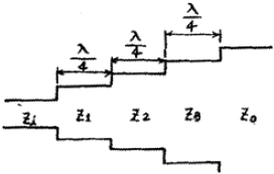
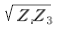
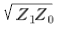
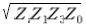
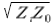
(정답률: 알수없음)
45. 지상 높이가 같은 역 L형 안테나와 수직 안테나를 비교하면 역 L형 안테나 쪽이 실효고가 높은데 그 이유는?
- 공진이 날카롭기 때문이다.
- 접지저항이 작기 때문이다.
- 상부의 정전용량이 증가하기 때문이다.
- 도체저항이 작기 때문이다.
(정답률: 알수없음)
46. 반파장 다이폴 안테나에서 유효길이가 λ/π라 할 때 유효개구면적(effective aperture area)은 얼마인가?
- 0.13λ2
- 0.21λ2
- 0.32λ2
- 0.51λ2
(정답률: 알수없음)
47. 동축케이블의 특성 임피던스는? (단, D : 외부도체의 지름 , d : 내부도체의 지름)
- D가 클수록, d는 적을수록 커진다.
- D가 적을수록, d는 클수록 커진다.
- D와 d가 클수록 커진다.
- D와 d가 적을수록 커진다.
(정답률: 알수없음)
48. 다음 전리층 중 임계주파수가 가장 낯은 전리층은?
- D층
- E층
- 스포라딕 E층
- F층
(정답률: 알수없음)
49. 문제 오류로 복원중입니다. 정확한 내용을 아시는 분께서는 오류신고를 통하여 내용 작성 부탁드립니다. 정답은 1번입니다.
- 복원중 (정확한 보기 내용을 아시는분께서는 오류 신고를 통하여 내용 작성부탁 드립니다. 정답은 1번입니다.)
- 복원중 (정확한 보기 내용을 아시는분께서는 오류 신고를 통하여 내용 작성부탁 드립니다. 정답은 1번입니다.)
- 복원중 (정확한 보기 내용을 아시는분께서는 오류 신고를 통하여 내용 작성부탁 드립니다. 정답은 1번입니다.)
- 복원중 (정확한 보기 내용을 아시는분께서는 오류 신고를 통하여 내용 작성부탁 드립니다. 정답은 1번입니다.)
(정답률: 알수없음)
50. 초단파가 가시거리를 넘어서 이례적으로 멀리 전파하는 일이 있는데 그 원인이 아난 것은?
- 초굴절 또는 라디오 덕트에 의한 전파
- 대류권 산란에 의한 전파
- 산악 회절파에 의한 전파
- F층의 반사 에 의한 전파
(정답률: 알수없음)
51.
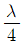
수직 접지 안테나의 길이(ℓ)가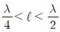
일 때 무엇을 삽입하여 안테나를 공진시키는가?- 연장 코일(coil)
- 단축콘덴서(condenser)
- 안테나는 분포정수 회로이므로 항상 공진되어 있다.
- 정항과 코일(coil)을 직렬로 연결한다.
(정답률: 알수없음)
52. 파라볼라 반사기의 역할로 맞는 것은?
- 전자 나팔에서 나온 구면파를 평면파로 변환한다.
- 카세그레인 안테나에서 부반사로 사용한다.
- 원편파만 사용할 수 있다.
- 광대역 특성을 갖도록 만들어 준다.
(정답률: 알수없음)
53. λ/2 다이폴 안테나의 전류 분포식은? (단, 끝단을 기준으로 한다.)
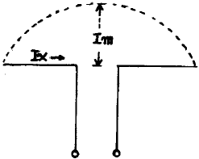
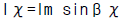
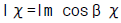
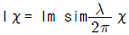
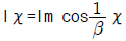
(정답률: 알수없음)
54. 전파가 전리층에 들어갔을 때 일어나는 현상과 거리가 먼것은?
- 전파의 굴절
- 감쇠작용
- 편파면의 회전
- 라디오덕트 현상
(정답률: 알수없음)
55. 주파수 1.5[㎒]용인 1/4파장 수직접지 공중선의 실효고는?
- 약 25[m]
- 약 32[m]
- 약 44[m]
- 약64[m]
(정답률: 알수없음)
56. 그림과 같은 폴디드 다이폴 안테나의 특징 중 잘못 설명한 것은?
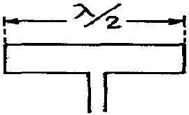
- 반파장 다이폴 안네나에 비해서 협대역 특성을 갖는다.
- 실효 길이는 반파장 다이폴 안테나보다 약 2배이다.
- 복사전력은 λ/2 다이폴 안테나보다 약 4배이다.
- 복사정항은 약 292[Ω]이다.
(정답률: 알수없음)
57. 단파대의 불감지대에서 신호가 잡히는 현상으로 가장 적합한 원인은?
- 회절파
- 산악회절파
- 대류권 산란파
- 전리층 산란파
(정답률: 알수없음)
58. 다음 안테나 중에서 복사효율이 가장 좋은 것은?
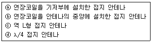
- ⓐ
- ⓑ
- ⓒ
- ⓓ
(정답률: 알수없음)
59. 텔레비전 방송의 송신용으로 적당하지 않는 안테나는?
- 슈퍼 게인 안테나
- 슈퍼 턴 스타일 안테나
- 쌍 루우프 안테나
- 인라인 안테나
(정답률: 알수없음)
60. 초단파대를 사용할 경우 가시거리 내에서 전계강도에 영향을 주는 사항이 아닌 것은?
- 회절계수
- 사용 주파수
- 송ㆍ수신 안테나 높이
- 송ㆍ수신 안테나 거리
(정답률: 알수없음)
4과목: 무선통신 시스템
61. 다음 중 송신기를 동작시킬 때 가장 주의를 기울여야 하는 계기는?
- 교류입력 전원의 전압계
- 주파수 측정기
- 바이어스 전압계
- 안테나 또는 급전선의 고주파 전류계
(정답률: 알수없음)
62. 진폭 변조도가 100% 일 때, 피변조파 전력(Pt)과 반송파전력(Pc)의 관계가 올바른 것은?
- Pt = 1Pc
- Pt = 1.5Pc
- Pt = 2Pc
- Pt = 2.5Pc
(정답률: 알수없음)
63. 통신위성체의 통신부는 안테나계와 중계기계로 구성된다. 직접중계방식의 위성중계기는 주로 어떤 부분으로 구성되는가?
- 수신부, 신호증폭부, 주파수변환부, 송신부
- 수신부, 발진부, 변조부, 송신부
- 수신부, 변조부, 증폭부, 송신부
- 수신부, 검파부, 증폭재생부, 송신부
(정답률: 알수없음)
64. AM 통신방식과 비교한 FM 통신방식의 특징을 열거한 것이다. 다음 중 틀린 것은?
- SN비가 좋다.
- 페이딩의 영향이 적다.
- 주파수 대역을 좁게 잡을 필요가 있다.
- 혼신방해를 적게 할 수 있다.
(정답률: 알수없음)
65. 위성통신의 일반적인 특징이 아닌 것은?
- 안정되고 대용량의 통신이 가능
- 장거리 통신에 적합
- 지연시간의 문제
- 셀방식에 의한 주파수 재사용
(정답률: 알수없음)
66. 마이크로파 통신시스템의 중계방식에서 수신한 마이크로파를 중간주파수로 변환하여 증폭을 행한 후, 다시 마이크로파로 송신하는 방식은?
- 헤테로다인 중계방식
- 검파 중계방식
- 국부주파수 중계방식
- 직접 중계방식
(정답률: 알수없음)
67. NTSC 방식에서 TV 영상신호로 AM 변조된 피변조파를 TV 방송전파로 발사하는 방식은?
- 잔류측파대방식
- 양측파대방식
- 단측파대 저감 반송파방식
- 단측파대 억압 반송파방식
(정답률: 알수없음)
68. 증폭기에서 발생하는 일그러짐(Distortion) 현상의 원인이 아닌 것은?
- 비직선 일그러짐
- 주파수 일그러짐
- 잡음(Noise)
- 위상 일그러짐
(정답률: 알수없음)
69. 최근 가장 만이 사용되는 위성통신지구국의 안테나는?
- 헤리컬(helical) 안테나
- 혼(horn) 안테나
- 무지향성 안테나
- 카세그레인 안테나
(정답률: 알수없음)
70. Radar에서 Pulse 파를 발사한 후, 5[㎳]후에 반사파가 수신되었다면 반사점까지의 거리는?
- 350[㎞]
- 550[㎞]
- 750[㎞]
- 950[㎞]
(정답률: 알수없음)
71. 마이크로파 중계국소의 올바른 설치 계획에 들지 않는 것은?
- 산정에 설치
- 원격감시제어장비 구비
- 정전압장치 구비
- 비가시권 확보
(정답률: 알수없음)
72. 셀룰러 방식의 통화용량 증가 방법으로 맞지 않는 것은?
- 동적 주파수 할당
- 추가 주파수 스펙트럼 사용
- 기지국 채널 증설
- 대규모 cell의 구성
(정답률: 알수없음)
73. 전파의 성질 중 지구등가반경과 가장 관계가 깊은 것은?
- 반사
- 굴절
- 감쇄
- 회절
(정답률: 알수없음)
74. 3단 증폭회로에서 각 단의 전압증폭도를 각각 G1, G2, G3 잡음지수를 F1, F2, F3 라 할 때 종합잡음지수 F는?
- F=F1+F2+F3
- F=F1+(F2-1)/G2+(F3-1)/G2G3
- F=F1+(F2-1)/G2+(F3-1)/G1G2
- F=F1+(F2-1)/G1+(F3-1)/G1G2
(정답률: 알수없음)
75. 디지털 신호의 펄스열을 그대로 전송하는 방식은?
- 베이스밴드 전송방식
- 반송대역 전송방식
- 광대역 전송방식
- 협대역 전송방식
(정답률: 알수없음)
76. 90년대 이후의 새로운 해사이동통신 시스템으로 실용화되고 있는 시스템은?
- MCAS(Multi-Channel Access System)
- TDRSS(Tracking and Data Relay Satellite System)
- GMDSS(Global Maritime Distress and Safety System)
- CS(Cellular System)
(정답률: 알수없음)
77. 이동전화의 무선환경에 대한 설명이 아닌 것은?
- 전파경로 손실은 주파수가 높아질수록 또는 전파경로가 길어질수록 증가한다.
- 단말기에 수신된 전파는 다중경로를 통한 전계강도의 합이 되므로 다중경로 페이딩이 발생한다.
- 단말기가 이동 중 수신한 페이딩 신호는 주기적인 형태를 갖는다.
- 다중경로 페이딩은 통계적으로 Rayleigh 분포를 갖는다.
(정답률: 알수없음)
78. 지구 표면의 1/3을 커버할 수 있고 120° 간격으로 위성을 fqocl하여 극지역을 제외한 지구상의 어떤 지역과도 통신이 가능한 방식은?
- 정지위성 방식
- 다중위성 방식
- 위상위성 방식
- Random 위성 방식
(정답률: 알수없음)
79. CDMA 시스템에서 교환국의 구성요소가 아닌것은?
- 콘트롤 서브시스템(Control Subsystem)
- 인터콘넥션 서브시스템(Interconnection Subsystem)
- 스위칭 서브시스템(Switching Subsystem)
- 드라이빙 서브시스템(Driving Subsystem)
(정답률: 알수없음)
80. 표본화 정리에서 표본화 주파수 fs와 신호에 포함되어 있는 최고 주파수 fm사이의 관계는?
- fs≤2fm
- fs≥2m
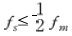
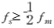
(정답률: 알수없음)
5과목: 전자계산기 일반 및 무선설비기준
81. 원시프로그램(source program)을 컴파일(compile)하여 얻어지는 프로그램은?
- 실행 프로그램
- 목적 프로그램
- 유틸리티 프로그램
- 시스템 프로그램
(정답률: 알수없음)
82. 다음 중 데이터를 연산할 때 스텍(stack)을 사용하는 인스트럭션은?
- 0 주소 인스트럭션
- 1 주소 인스트럭션
- 2 주소 인스트럭션
- 3 주소 인스트럭션
(정답률: 알수없음)
83. 다음 중 인터럽트를 발생시키는 장치들을 우선순위가 가장 높은 장치를 선두로 하여 우선순위에 따라 직렬로 연결한 하드웨어적인 우선순위 체제와 가장관계 깊은 것은?
- 폴링(polling)
- 인터럽트 마스크(interrupt mask)
- 데이지 체인(daisy chain)
- 스풀링(spooling)
(정답률: 알수없음)
84. 정보를 나타내는 부호에 여분으로 한 자리를 추가하여 사용하는 검출용 비트는?
- 패리티 비트(parity bit)
- 워드 패리티(word parity)
- 체크 비트(check bit)
- 에러 비트(error bit)
(정답률: 알수없음)
85. CPU가 무엇인가를 하고 있는가를 나타내는 상태를 메이저 상태라고 하는데 다음 중 메이저 상태의 종류에 해당되지 않는 것은?
- Fetch 상태
- Indirect 상태
- Timing 상태
- Interrupt 상태
(정답률: 알수없음)
86. 마이크로프로세서에서 어큐율레이터의 설명 중 틀린 것은?
- 기억 소자이다.
- 연산한 결과를 저장할 수 있다.
- 보조메모리 소자로서 저장 용량이 크다.
- 연산에 사용할 수 있다.
(정답률: 알수없음)
87. 2진수 1100001을 8진수로 변환한 것은?
- (102)8
- (107)8
- (141)8
- (145)8
(정답률: 알수없음)
88. 다음 프로그램 중 제어프로그램이 아닌 것은?
- 자료, 파일 관리프로그램
- 작업관리 프로그램
- 언어 번역 프로그램
- 기억 영역 관리 프로그램
(정답률: 알수없음)
89. 다음 중 컴퓨터에서 뺄셈 연산을 수행할 시 주로 사용되는 것은?
- 엔코더(encoder)
- 보수기
- 디코더(decoder)
- 누산기
(정답률: 알수없음)
90. File의 개념을 옳게 표현한 것은?
- Code의 집합을 말한다.
- Record의 집합을 말한다.
- Field의 집합을 말한다.
- Character의 수를 말한다.
(정답률: 알수없음)
91. 다음 국내 전파법의 종류 중 기본 법령에 해당하지않는 것은?
- 전파법
- 전기통신기본법
- 전파법시행령
- 무선설비규칙
(정답률: 알수없음)
92. 의료용 전파응용설비에서 의료전극 및 그 도선과 발진기ㆍ출력회로ㆍ전력선 등 사이에서의 절연저항은?
- 10 ㏁ 이상
- 30 ㏁ 이상
- 50 ㏁ 이상
- 100 ㏁ 이상
(정답률: 알수없음)
93. 지정된 공중선전력을 400W로하고 허용편차를 상한 15% 하한 5%로 하면 전파를 발사할 경우 허용되는 공중선전력의 범위는?
- 340W ~ 420W
- 380W ~ 460W
- 340W ~ 460W
- 380W ~ 420W
(정답률: 알수없음)
94. 외국의 법인이 개설할 수 있는 무선국은?
- 실험국
- 무선항행육상국
- 항공국
- 선박지구국
(정답률: 알수없음)
95. 통신설비인 전파응용설비 중 유도식 통신설비에서 발사되는 주파수 범위는?
- 9㎑ ~ 450㎑
- 9㎑ ~ 350㎑
- 9㎑ ~ 250㎑
- 9㎑ ~ 150㎑
(정답률: 알수없음)
96. 전자파적합등록 대상기기가 아닌 것은?
- 자동차 및 불꽃점화 엔진구동기기류
- 방송수신기기류
- 선박국용 무선방위측정기기류
- 형광등 등 조명기기류
(정답률: 알수없음)
97. 공중선계의 충족조건으로 적당하지 않은 것은?
- 공중선의 이득이 높고 능률이 좋을 것
- 정합이 충분할 것
- 공중선주가 지상으로부터 가능한 한 높을 것
- 만족한 지향성을 얻을 수 있을 것
(정답률: 알수없음)
98. 전파연구소장은 정보통신기기인증신청서를 접수한 날부터 몇 일 이내에 처리하여야 하는가?
- 1일
- 3일
- 5일
- 7일
(정답률: 알수없음)
99. 개인휴대전화용 G7W 전파의 공중선 전력의 표시 형식은?
- 첨두푸락선전력
- 평균전력
- 반송파전력
- 규격전력
(정답률: 알수없음)
100. 수신설비 성능의 조건으로서 적합하지 않는 않는 것은?
- 선택도가 적을 것
- 감도가 충분할 것
- 내부 잡음이 적을 것
- 명료도가 충분할 것
(정답률: 알수없음)
차단주파수 = 0.35 / (2π × 상승시간)
여기에 값을 대입하면,
차단주파수 = 0.35 / (2π × 0.35 × 10^-6) = 0.5 × 10^6 [Hz] = 0.5 [MHz]
따라서, 정답은 "0.5" 이다.